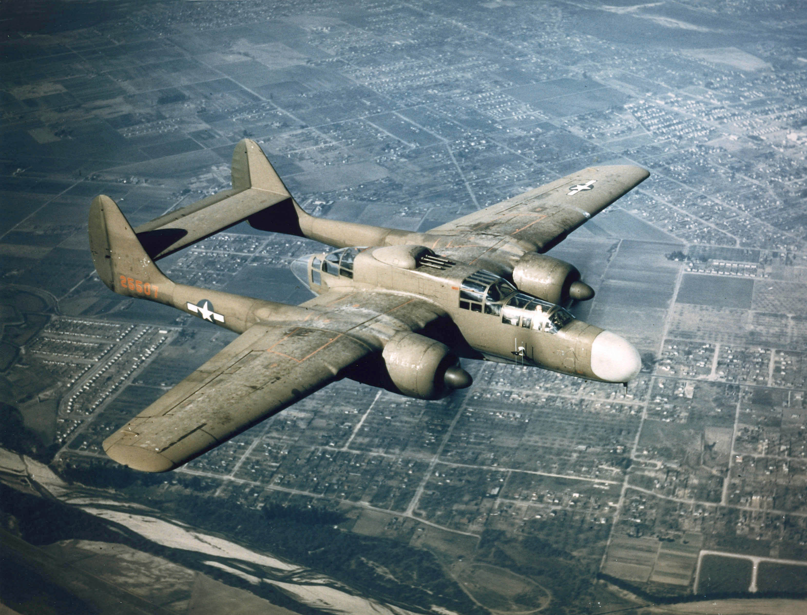

justanotherinternetguy's plane of the week
Northrop P-61 Black Widow

The Northrop P-61 Black Widow was the US Army Air Force's first
night fighter. At the time, combat avionics such as radar
were large and bulky, forcing aircraft designers to create a
different class of aircraft to house the avionics. In contrast,
day fighters were designed to be nimble and light, while
night fighters were much larger and had complex avionics. The
rather long nose of the P-61 housed the SCR-720 radar. Generally,
P-61s would be vectored into a general combat area by ground
control. Once at the scene of the combat, the P-61 could use its own
radar to search for enemy aircraft. The P-61 was a generally capable
aircraft, being able to stand ground against most German bombers and
any Japanese aircraft at the time. Nearing the end of WW2, the P-61
began to be outclassed by new German fighters. After the end of WW2,
the P-61 saw some sporadic use until the US could develop a jet
interceptor.
Overall, the P-61 spearheaded the implementation and usage of
complex avionics in aerial combat. While it didn't live up to the
same fame as other fighters of its time, it still contributed
meaningfully to the war effort.
Previous planes of the week: Boeing Skyfox, P-75, F-107, XA2J